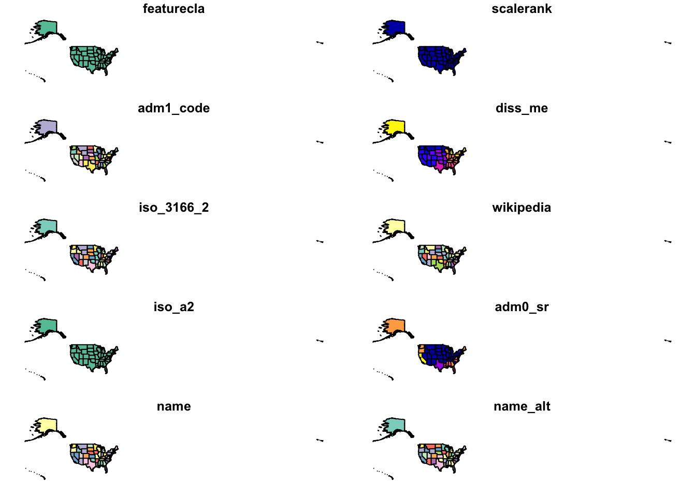
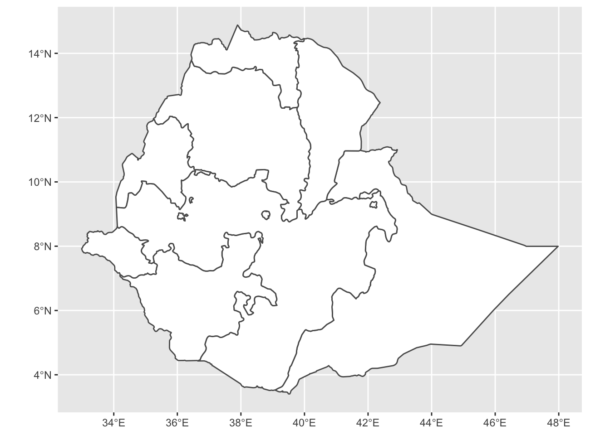
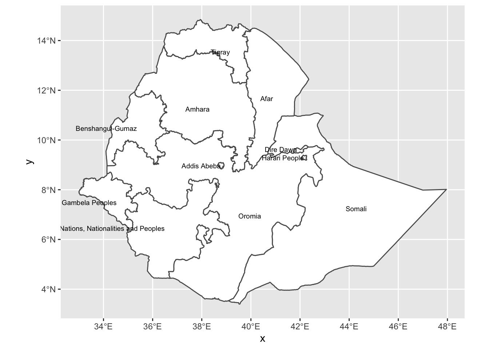
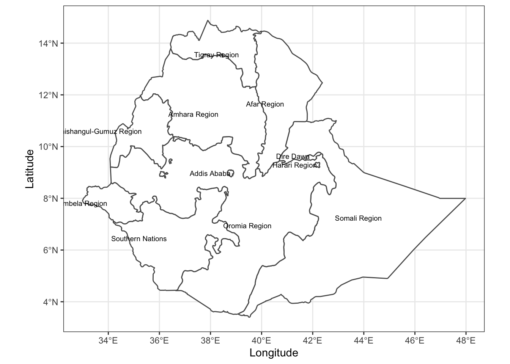
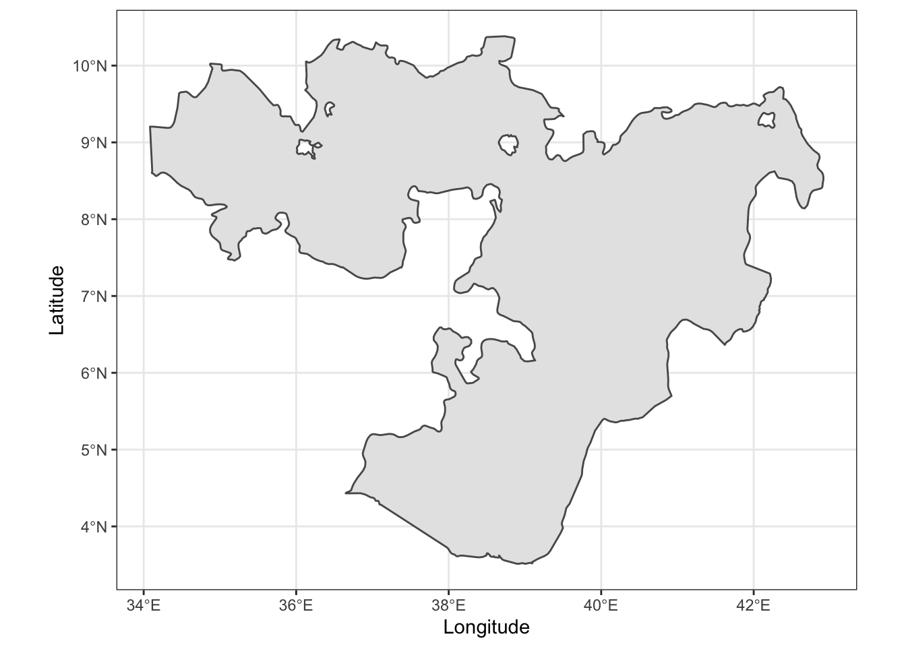
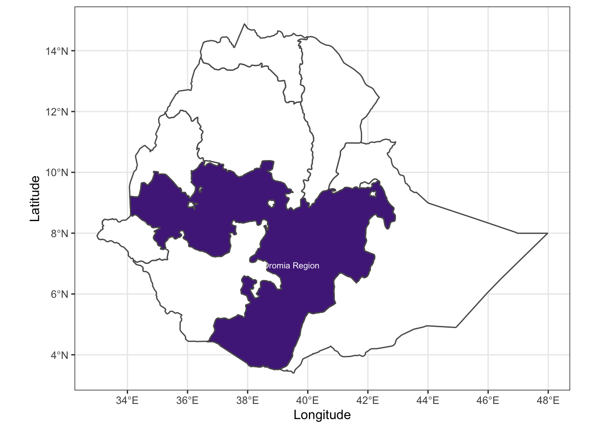

Creating Maps with ggplot2
Introduction
In this exercise we will use rnaturalearth, simple features and ggplot2 to create a map of the USA and then a map of Kansas and highlight Kansas within a larger map of the USA.
Once we have the base maps of the country and state(s) we will add points to a map as commonly done to indicate sampling sites or plot locations, etc.
library(dplyr)
library(ggplot2)
library(rnaturalearth)
library(rnaturalearthdata)
library(sf)Create Country Level Map of USA
This is our base layer, USA, of the map from Naturalearth.com using the base plot() to display these data.
Using ne_states() will return an sf object with state level information. There is also a ne_countries() to download country level outlines only as well.
usa_sf <- ne_states(geounit = "United States of America",
returnclass = "sf")
plot(usa_sf)## Warning: plotting the first 10 out of 83 attributes; use max.plot = 83 to plot
## all
That returns a map that’s probably not what we think of when we think of a map of the US. To clean it up, we’ll filter Alaska, Hawaii and Puerto Rico just for the purposes of this exercise. If you would like to include Alaska and Hawaii in your map, have a look at the albersusa package.
To find out what the column names are in the dataset that we can filter on we can use, colnames().
colnames(usa_sf)## [1] "featurecla" "scalerank" "adm1_code" "diss_me" "iso_3166_2"
## [6] "wikipedia" "iso_a2" "adm0_sr" "name" "name_alt"
## [11] "name_local" "type" "type_en" "code_local" "code_hasc"
## [16] "note" "hasc_maybe" "region" "region_cod" "provnum_ne"
## [21] "gadm_level" "check_me" "datarank" "abbrev" "postal"
## [26] "area_sqkm" "sameascity" "labelrank" "name_len" "mapcolor9"
## [31] "mapcolor13" "fips" "fips_alt" "woe_id" "woe_label"
## [36] "woe_name" "latitude" "longitude" "sov_a3" "adm0_a3"
## [41] "adm0_label" "admin" "geonunit" "gu_a3" "gn_id"
## [46] "gn_name" "gns_id" "gns_name" "gn_level" "gn_region"
## [51] "gn_a1_code" "region_sub" "sub_code" "gns_level" "gns_lang"
## [56] "gns_adm1" "gns_region" "min_label" "max_label" "min_zoom"
## [61] "wikidataid" "name_ar" "name_bn" "name_de" "name_en"
## [66] "name_es" "name_fr" "name_el" "name_hi" "name_hu"
## [71] "name_id" "name_it" "name_ja" "name_ko" "name_nl"
## [76] "name_pl" "name_pt" "name_ru" "name_sv" "name_tr"
## [81] "name_vi" "name_zh" "ne_id" "geometry"We see that a column named “name” exists, with the state names.
We can use this to filter() the data so that it only represents the continental 48 states and use that to make a map.
For more on filtering or sub-setting sf objects, see: https://cran.rstudio.com/web/packages/sf/vignettes/sf4.html.
usa_sf <- usa_sf %>%
filter(!(
name %in% c("Alaska", "Hawaii", "Puerto Rico")
))Create a map using ggplot2
Using ggplot2, we have more control over how the data are displayed than using the base plot() command.
First, plot the whole country using ggplot2’s geom_sf().
usa <- ggplot(usa_sf) +
geom_sf(fill = "white")
usa
Projecting map data
Projections are used to reduce the distortion in the data that are displayed in a map. There are several types of map projections available. For this map of the US we will use the U.S. National Atlas Equal Area projection, which has a EPSG (European Petroleum Survey Group) number of 2163 and is well suited to the continental USA.
{kind=link}
usa_sf <- st_transform(usa_sf, crs = 2163)
usa <- ggplot(usa_sf) +
geom_sf(fill = "white")
usa
Add labels to the states
The naturalearth data have several columns to work with. One of them is the two letter postal code for the states, postal. Using geom_sf_text(), we can add this information to the map labelling the states.
usa <-
usa +
geom_sf_text(
data = usa_sf,
aes(x = longitude,
y = latitude,
label = postal),
size = 2.5,
hjust = 1
)
usa
Final touches
Properly label the x and y-axis and set the theme. The ggplot2 theme, theme_bw() is nice to use with maps, so we will apply that here as well.
usa <-
usa +
xlab("Longitude") +
ylab("Latitude") +
theme_bw()
usa
Creating maps of individual states
To create a map of only Kansas, subset the sf object, usa_sf such that it contains only the data for Kansas.
Filter Kansas
ks_sf <- filter(usa_sf, name_pt == "Kansas")
ks_sf## Simple feature collection with 1 feature and 83 fields
## geometry type: MULTIPOLYGON
## dimension: XY
## bbox: xmin: -181900 ymin: -887800 xmax: 479800 ymax: -544000
## projected CRS: NAD27 / US National Atlas Equal Area
## featurecla scalerank adm1_code diss_me iso_3166_2
## 1 Admin-1 scale rank 2 USA-3530 3530 US-KS
## wikipedia iso_a2 adm0_sr name name_alt name_local
## 1 http://en.wikipedia.org/wiki/Kansas US 1 Kansas KS|Kans. <NA>
## type type_en code_local code_hasc note hasc_maybe region region_cod
## 1 State State US20 US.KS <NA> <NA> Midwest <NA>
## provnum_ne gadm_level check_me datarank abbrev postal area_sqkm sameascity
## 1 0 1 20 1 Kans. KS 0 NA
## labelrank name_len mapcolor9 mapcolor13 fips fips_alt woe_id
## 1 0 6 1 1 US20 <NA> 2347575
## woe_label woe_name latitude longitude sov_a3 adm0_a3
## 1 Kansas, US, United States Kansas 38.5 -98.33 US1 USA
## adm0_label admin geonunit gu_a3 gn_id
## 1 2 United States of America United States of America USA 4273857
## gn_name gns_id gns_name gn_level gn_region gn_a1_code region_sub
## 1 Kansas -1 <NA> 1 <NA> US.KS West North Central
## sub_code gns_level gns_lang gns_adm1 gns_region min_label max_label min_zoom
## 1 <NA> -1 <NA> <NA> <NA> 3.5 7.5 2
## wikidataid name_ar name_bn name_de name_en name_es name_fr name_el name_hi
## 1 Q1558 <NA> <NA> Kansas Kansas Kansas Kansas <NA> <NA>
## name_hu name_id name_it name_ja name_ko name_nl name_pl name_pt name_ru
## 1 Kansas Kansas Kansas <NA> <NA> Kansas Kansas Kansas <NA>
## name_sv name_tr name_vi name_zh ne_id geometry
## 1 Kansas Kansas Kansas <NA> 1159315359 MULTIPOLYGON (((-181902 -88...Plot Kansas
After filtering Kansas and creating a new object, we can plot it now using the EPSG specification NAD83 / Kansas LCC for the projection.
ggplot(data = ks_sf) +
geom_sf() +
xlab("Longitude") +
ylab("Latitude") +
theme_bw() +
coord_sf(crs = 6922)
Highlighting states within the country
Using the usa_sf and ks objects that we have created, it is possible to create a map that highlights one state and labels it using the postal code, in this case Kansas. Note that we use the data argument twice here. Once for the base USA map and once for the map of Kansas that we use to highlight the state on the map.
ggplot(data = usa_sf) +
geom_sf(fill = "white") +
geom_sf(data = ks_sf,
fill = "#512888") +
geom_sf_text(
data = ks_sf,
aes(x = longitude,
y = latitude,
label = postal),
colour = "white",
size = 2.5,
hjust = 1
) +
xlab("Longitude") +
ylab("Latitude") +
theme_bw()
Adding and labelling points on a map
Now we will build on the maps we created by adding points to a map of Kansas with latitude and longitude values.
Reprojecting Kansas
Since we’re just mapping a single state, Kansas, we’ll reproject the ks_sf object to EPSG 6922 before proceeding to add points to this base layer of data. Previously, we used this projection for the Kansas map but we only specified it in the coord_sf() when we created the map. Here, we will modify the sf object by transforming it to the new projection.
Create data.frame of town and city locations
Using the previously created ks_sf object, we will plot the locations of cities or towns in Kansas. Here we will create a data.frame() of the geographic locations of some selected cities or towns in Kansas to illustrate how to add points to a base map created in the previous section. However, you will probably have your own points in a spreadsheet or .CSV file that you can import to a data.frame() when you are creating your own maps. Aside from importing, rather than creating the data in your R session, the steps are the same.
ks_towns <- data.frame(
stringsAsFactors = FALSE,
town = c(
"Bellville",
"Colby",
"Dodge City",
"Emporia",
"Goodland",
"Hays",
"Hesston",
"Manhattan",
"Pittsburg"
),
latitude = c(
39.8245,
39.3958,
37.7528,
38.4039,
39.3508,
38.8792,
38.1383,
39.183609,
37.4109
),
longitude = c(
-97.6325,
-101.0524,
-100.0171,
-96.1817,
-101.7102,
-99.3268,
-97.4314,
-96.571671,
-94.705
)
)
ks_towns## town latitude longitude
## 1 Bellville 39.82 -97.63
## 2 Colby 39.40 -101.05
## 3 Dodge City 37.75 -100.02
## 4 Emporia 38.40 -96.18
## 5 Goodland 39.35 -101.71
## 6 Hays 38.88 -99.33
## 7 Hesston 38.14 -97.43
## 8 Manhattan 39.18 -96.57
## 9 Pittsburg 37.41 -94.70Converting sites to an sf object
While we could plot everything using geom_point(), if we convert the data.frame to an sf type object, it is much more flexible and allows us to project the data for a more attractive map. We will use the coordinate reference system (CRS) 6922, NAD83 / Kansas LCC, for Kansas here.
ks_towns <-
st_as_sf(ks_towns,
coords = c("longitude", "latitude"),
crs = 4326)
ks_towns <- st_transform(ks_towns, crs = 6922)Now we’re ready to add the points to the map!
Adding town locations to map
Adding the points to the map works in the same fashion as adding layers in other ggplot2 objects. You start with the base layer, in this case Kansas, and add a layer with the points and another with the labels for the points.
ggplot() +
geom_sf(data = ks_sf,
fill = "white") +
geom_sf(data = ks_towns,
size = 2) +
geom_sf_label(
data = ks_towns,
aes(label = town),
size = 2.5,
hjust = 0.5,
vjust = 1.5
) +
theme_bw() +
xlab("Longitude") +
ylab("Latitude")